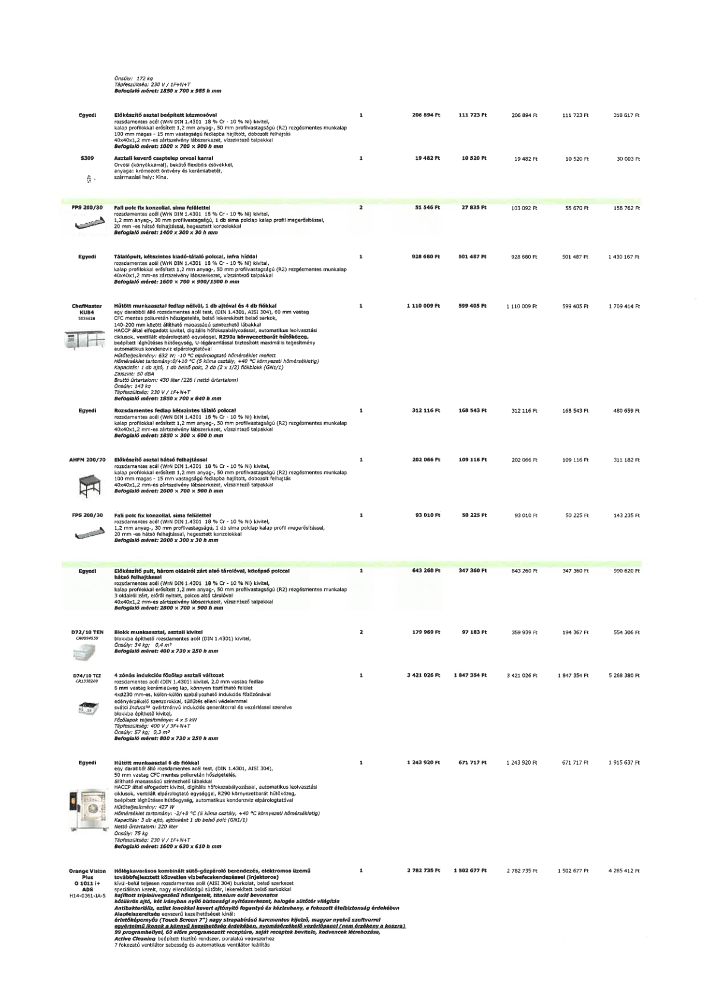

| Tétel | Menny. | Egys. | Anyag e.ár (net HUF) | Díj e.ár (net HUF) | Anyag összesen (net HUF) | Díj összesen (net HUF) | Anyag+Díj összesen (net HUF) |
|---|---|---|---|---|---|---|---|
| Egyedi Előkészítő asztal beépített kézmosóval | 1 | NaN | 206 894 | 111 723 | 206 894 | 111 723 | 318 617 |
| S309 Asztali keverő csaptelep orvosi karral | 1 | NaN | 19 482 | 10 520 | 19 482 | 10 520 | 30 003 |
| FPS 200/30 Fali polc fix konzollal, sima felülettel | 2 | NaN | 51 546 | 27 835 | 103 092 | 55 670 | 158 762 |
| Egyedi Tálalópult, kétszintes kiadó-tálaló polccal, infra híddal | 1 | NaN | 928 680 | 501 487 | 928 680 | 501 487 | 1 430 167 |
| ChefMaster KUB4 5026628 Hűtött munkaasztal fedlap nélkül, 1 db ajtóval és 4 db fiókkal | 1 | NaN | 1 110 009 | 599 405 | 1 110 009 | 599 405 | 1 709 414 |
| Egyedi Rozsdamentes fedlap kétszintes tálaló polccal | 1 | NaN | 312 116 | 168 543 | 312 116 | 168 543 | 480 659 |
| AHFM 200/70 Előkészítő asztal hátsó felhajtással | 1 | NaN | 202 066 | 109 116 | 202 066 | 109 116 | 311 182 |
| FPS 200/30 Fali polc fix konzollal, sima felülettel | 1 | NaN | 93 010 | 50 225 | 93 010 | 50 225 | 143 235 |
| Egyedi Előkészítő pult, három oldalról zárt alsó tárolóval, középső polccal hátsó felhajtással | 1 | NaN | 643 260 | 347 360 | 643 260 | 347 360 | 990 620 |
| D72/10 TEN CR0994959 Blokk munkaasztal, asztali kivitel | 2 | NaN | 179 969 | 97 183 | 359 939 | 194 367 | 554 306 |
| D74/10 TCI CR1358209 4 zónás indukciós főzőlap asztali változat | 1 | NaN | 3 421 026 | 1 847 354 | 3 421 026 | 1 847 354 | 5 268 380 |
| Egyedi Hűtött munkaasztal 6 db fiókkal | 1 | NaN | 1 243 920 | 671 717 | 1 243 920 | 671 717 | 1 915 637 |
| Orange Vision Plus O 1011 i+ ADS H14-0361-IA-S Hőlégkeveréses kombinált sütő-gőzpároló berendezés | 1 | NaN | 2 782 735 | 1 502 677 | 2 782 735 | 1 502 677 | 4 285 412 |
